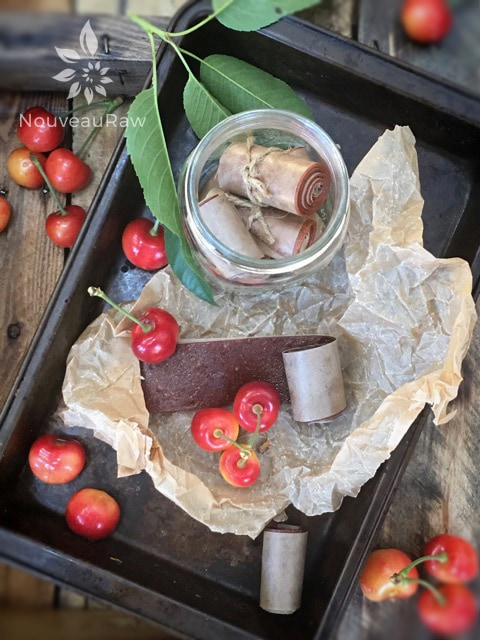

Banana Cherry Fruit Leather

~ raw, vegan, gluten-free, nut-free ~
Fruit leathers are a great gift idea that will show someone just how much you love and care for them. Whether it is a gift for a birthday, for Valentine’s Day, for Christmas, or best of all… a “just because” gift… making healthy treats that not only look amazing but taste amazing, it will warm their hearts and fill their bellies with wonderful nutrients! Best of all homemade editable gifts are a heartfelt present, and one size fits all.
I know many of you will roll your eyes when I mention that the holidays are lurking just around the corner. What an excellent time to get started.
There are so many wonderful fruits in season right now (cherries, hint hint) and to preserve them in a way that can be enjoyed in the winter months will be a welcome gift. These fruit leathers will keep in the freezer for up to one year, so pull that dehydrator out, turn on some Christmas (gift-giving) music and pour your heart into making some of these wonderful treats.
Ingredients:
yields 5 cups
- 4 cups Bing cherries, washed and pitted
- 2 large ripe bananas
- 1 Tbsp fresh lemon juice
Preparation:
- Select RIPE or slightly overripe cherries and bananas that have reached a peak in color, texture, and flavor.
- Prepare the cherries; wash, dry, remove stems, and the pits.
- Puree the fruit and lemon juice in your blender or food processor until smooth. Taste and sweeten if needed. Keep in mind that flavors will intensify as they dehydrate. When adding a sweetener do so 1 tbsp at a time, and reblend, tasting until it is at the desired taste. It is best to use a liquid type sweetener such as raw honey or maple syrup as an example. Don’t use granulated sugar because it tends to change the texture of the finished fruit leather.
- Problem: The puree for the fruit leather is too thick (won’t pour easily). Add fruit juice or water, a little at a time until the right consistency. Also, you can add other fruits that are higher in water content.
- Problem: The puree for the fruit leather is too thin (too runny). Mix with fruit that has a lower water content such as banana (make a thicker puree), or add 1 Tbsp at a time of ground chia seeds.

Spread the fruit puree on teflex sheets that come with your dehydrator. Pour the puree to create an even depth of 1/8 to 1/4 inch. If you don’t have teflex sheets for the trays, you can line your trays with plastic wrap or parchment paper. Do not use wax paper or aluminum foil.
- Lightly coat the food dehydrator plastic sheets or wrap with a cooking spray, I use coconut oil that comes in a spray.
- When spreading the puree on the liner, allow about an inch of space between the mixture and the outside edge. The fruit leather mixture will spread out as it dries, so it needs a little room to allow for this expansion.
- Be sure to spread the puree evenly on your drying tray. When spreading the puree mixture, try tilting and shaking the tray to help it distribute more evenly. Also, it is a good idea to rotate your trays throughout the drying period. This will help assure that the leathers dry evenly.
- Dehydrate the fruit leather at 145 degrees (F) for one hour then reduce the temp to 115 degrees (F) and continue drying for about 16 (+/-) hours. The finished consistency should be pliable and easy to roll.
- Check for dark spots on top of the fruit leather. If dark spots can be seen it is a sign that it is not completely dry.
- Press down on the fruit leather with a finger. If no indentation is visible or if it is no longer tacky to the touch, the fruit leather is dry and can be removed from the dehydrator.
- Peel the leather from the dehydrator trays or parchment paper. If it peels away easily and holds its shape after peeling, it is dry. If the fruit leather is still sticking or loses its shape after peeling, it needs further drying.
- Under-dried fruit leather will not keep; it will mold. Over-dried fruit leather will become hard and crack, although it will still be edible and will keep for a long time
- Storage: To store the finished fruit leather…
- Allow the leather to cool before wrapping up to avoid moisture from forming, thus giving it a breeding ground for molds.
- Roll them up and wrap them tightly with plastic wrap. Click (here) to see photos of how I wrap them.
- Place in an air-tight container, and store in a dry, dark place. (Light will cause the fruit leather to discolor.)
- The fruit leather will keep at room temperature for one month, or in a freezer for up to one year.
Culinary Explanations:
- Why do I start the dehydrator at 145 degrees (F)? Click (here) to learn the reason behind this.
- When working with fresh ingredients, it is important to taste test as you build a recipe. Learn why (here).
- Don’t own a dehydrator? Learn how to use your oven (here). I do however truly believe that it is a worthwhile investment. Click (here) to learn what I use.
© AmieSue.com